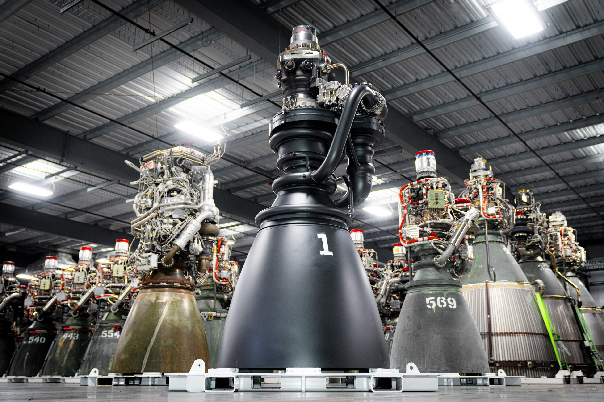
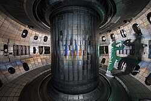
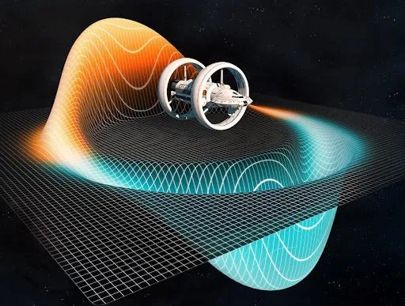

| HOME |
ARTEMIS | MARTE | SPAZIO COMMERCIALE | STAZIONI SPAZIALI | PROPULSIONE |
DAI RAZZI CHIMICI AL FUTURO |
|
|
La propulsione è il problema centrale di tutta l'esplorazione spaziale: per andare più lontano, più veloce e con più carico, servono motori radicalmente diversi da quelli attuali. Oggi tutti i razzi operativi usano propulsione chimica - bruciare un carburante per generare spinta - una tecnologia che ha portato l'uomo sulla Luna ma che ha limiti fisici invalicabili per viaggi interplanetari. Il futuro dell'esplorazione dipende da tecnologie completamente diverse, alcune già testate, altre ancora sulla carta.
|
|

Falcon 9 di SpaceX: il razzo chimico riutilizzabile più avanzato al mondo |
 Il motore Raptor a metano liquido di SpaceX, il più potente mai costruito |
PROPULSIONE IONICA E NUCLEARE |
|
|

Motore ionico Hall-effect: piccolo, silenzioso, e capace di spingere una sonda per anni |
IL FUTURO OLTRE I LIMITI FISICI |
|
|
Le tecnologie più speculative ma studiate seriamente dalla fisica teorica riguardano la possibilità di superare i limiti imposti dalla chimica e anche dalla propulsione nucleare convenzionale. Alcune sono già oggetto di ricerca finanziata.
|
|
|
 Reattore a fusione tokamak: la stella artificiale che potrebbe cambiare tutto |
 Concept artistico della metrica di Alcubierre: la fisica del warp drive |